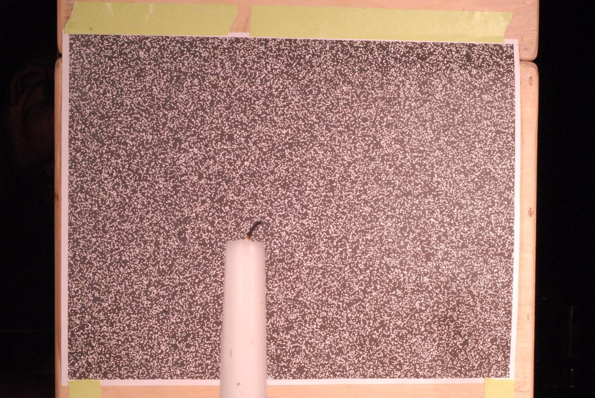
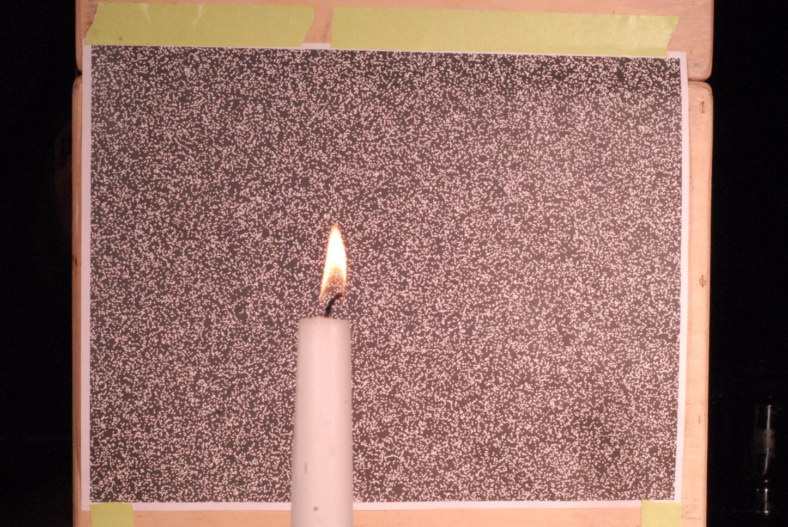
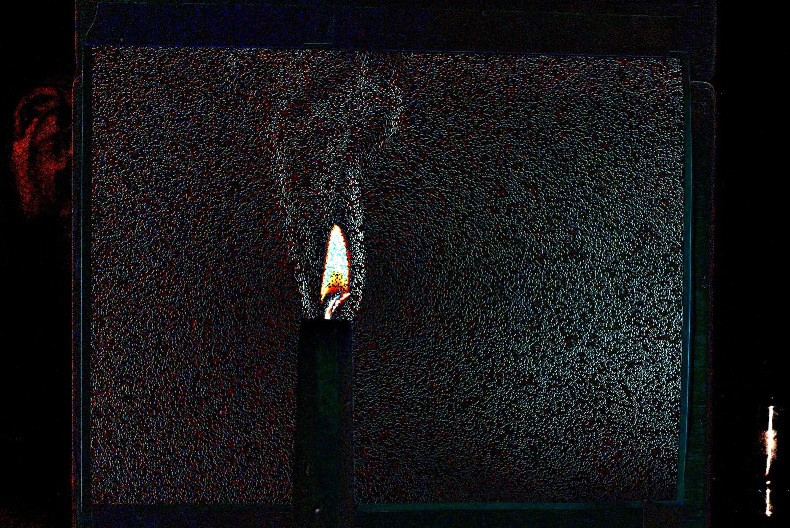
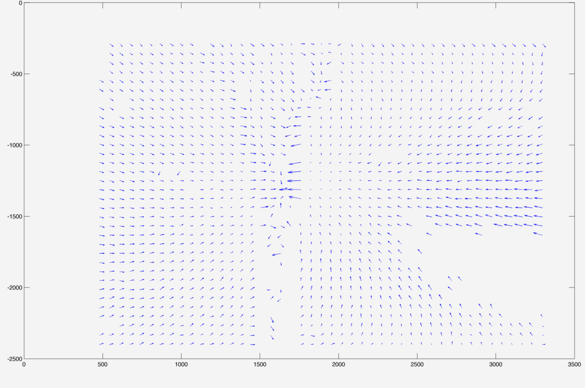

For our final project for Strobe Lab, we decided to investigate the
Background-oriented schlieren technique.
https://en.wikipedia.org/wiki/Background-oriented_schlieren_technique
By taking a pre- and post-image of dots, heat will distort the dots and we can
take use that to create a visualization of the heat flow.
My contribution on the CS side was minimal, however I found the project as a
whole really cool, so I am documenting it here.
My project partners were Merritt Boyd and Monica Ruiz.

Pre

Post

Diff

Vector of heat flow in matlab
Note that the final image (of the vectors) is very low resolution. Our script
output very low resolution images (the pretty image is from a simple diff using
a photo editing program). Fixin that was to be our “future work”